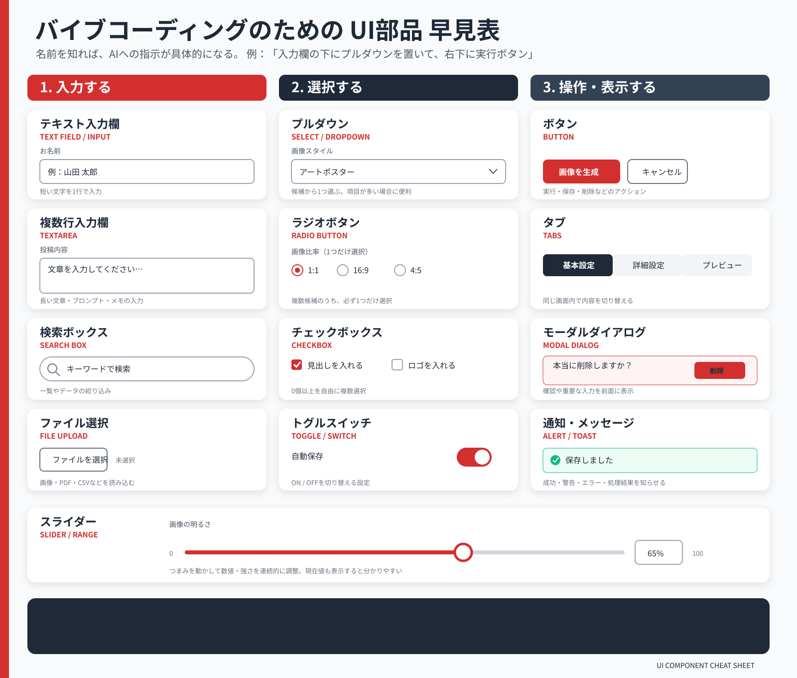

3回シリーズ 無料Webセミナー 第2回 ／ 2026年8月23日（日）20:00〜20:45
「これ、毎回面倒」をAIで自分の道具にする。
「自分の基準」を、道具に入れる
同じ3つの候補でも、何を重く見るかで答えは変わります。
その「重さ」を、日本語で頼んで足していきます。
清水 幸久（Yukisa）AI・ITよろず相談所
Google Meet 参加無料 各回45分
Recap
第1回の振り返り ／ 「1行だけ試す」の回収
前回やったこと
困りごとを3つに分けて、最小版を作った
入力 候補3つと、見るところ（軸）4つ
考えるルール 軸ごとに0〜5点をつけて合計する
出力 順位と総合点
考えるルール 軸ごとに0〜5点をつけて合計する
出力 順位と総合点
前回の言葉：バイブコーディング／アーティファクト／プロンプト
前回書いたコード：0行
お聞きします
やってみた方、どこで止まりましたか
うまくいった方も、途中で止まった方も、そのままチャット欄に入れてください。止まった場所こそ、今日いちばん役に立つ材料です。
「何を書けばいいか分からなかった」
「出てきた画面が思っていたものと違った」
「そもそも開けなかった」
Problem
最小版を使うと見えてくる、3つの不足
前回の道具は、動きます。ですが、そのままでは人に見せられません。
1
どの軸も、同じ重さで計算される
予算も、駅からの近さも、同じ扱い。実際には、そんな決め方はしていません。
2
なぜその順位なのか、分からない
点数だけ出ても、上司に聞かれたときに答えられません。
3
僅差でも、1位だと言い切ってしまう
4.0と3.9は、ほぼ同じです。それを「1位です」とだけ言うのは、危ない道具です。
Why Weights
同じ3店を見ていても、
見ているところが違う
見ているところが違う
上司
まず予算。
いくらかかるか。
いくらかかるか。
若手
個室かどうか。
話しやすいか。
話しやすいか。
遠方の人
駅から何分か。
幹事
直前に人数が変わっても大丈夫か。
「決められない」のではありません。見ているところが違うだけです。
その違いを、画面の上に出します。
その違いを、画面の上に出します。
Today's Build
今日、道具に足す3つ
ADD 1
重みのスライダー
軸ごとに1〜5で「どれくらい重く見るか」を決められるようにします。
ADD 2
順位の理由
「予算を重く見たので、とり吉が1位です」——そのまま報告に使える言葉で出します。
ADD 3
僅差の警告
1位と2位の差が小さいとき、「ほぼ互角です」と注意を出します。
今日の言葉
評価軸 と 重み
criteria / weight
評価軸は「何を見て決めるか」。重みは「それをどれくらい重く見るか」。この2つを合わせたものが、あなたの判断基準そのものです。頭の中にしかなかったものを、画面の上に出します。
ライブデモ 1
重みを、足す
頼む言葉
いまは4つの軸が同じ重さで計算されています。軸ごとに1〜5の重みをスライダーで決められるようにして、重みをかけた合計点で順位を出すように直してください。
「スライダー」という言葉を知っていれば十分です。作り方は知らなくて構いません。
重みを動かすと、その場で順位が変わる。ここが今日いちばん面白いところです。
ライブデモ 2
なぜその順位なのか、理由を出す
頼む言葉
順位のとなりに、なぜその順位になったのかの理由を、日本語の一文で表示してください。どの軸で点を稼いだか、どの軸で落としたかが分かるようにしてください。
「予算の重みが高いため、一人4,000円のとり吉が1位です。ただし駅から徒歩8分の点で落としています。」
ここが、この道具の中心です。順位ではなく、説明できる形が手に入ります。
ライブデモ 3
僅差のときは、言い切らない
頼む言葉
1位と2位の総合点の差が0.3点以内のときは、「この2つはほぼ互角です。次の点を確認してください」という注意文を、結果の上に出してください。
道具に「自信がないときは、そう言う」という性格を持たせます。
言い切る道具は、使う人の判断を奪います。迷いを残す道具のほうが、仕事では信用されます。
The Point
同じ3店、同じ情報。それでも1位が入れ替わる
上司の重み
予算5 近さ2 個室4 変更3
| 順位 | 候補 | 総合点 |
|---|---|---|
| 1 | とり吉 | 4.0 |
| 2 | まる屋 | 3.9 |
| 3 | ラ・ペール | 2.7 |
差は0.1点。僅差の警告が出ます。
幹事・若手の重み
予算2 近さ4 個室5 変更5
| 順位 | 候補 | 総合点 |
|---|---|---|
| 1 | まる屋 | 4.2 |
| 2 | とり吉 | 3.6 |
| 3 | ラ・ペール | 3.3 |
1位が入れ替わりました。
Template
修正を頼む言葉の型
1
いまどうなっているか
「いまは、どの軸も同じ重さで計算されています」
2
どうなってほしいか
「軸ごとに1〜5の重みをつけられるようにしてください」
3
どう見えてほしいか
「スライダーで動かせて、動かすとその場で順位が変わるようにしてください」
今日の言葉
反復
iteration ／ イテレーション
一度で完成させず、出す → 見る → 直すを繰り返して育てること。AIと作るときの基本のやり方です。「一発で正解を出させる」より、「3回直す」ほうが速い。この言葉を知っていると、うまくいかないときに焦らなくなります。
FAQ
「毎回AIに聞けばいいのでは？」への4つの答え
ブレない
チャットで毎回聞くと、その日の聞き方で答えの観点が変わります。道具は毎回同じ軸で採点します。
打たなくていい
長い前提説明を毎回書き直しません。候補だけ差し替えます。
比べられる
前回と同じ軸で判断するので、判断が積み上がります。
渡せる
軸ごと他の人に渡せます。「うちはこう選ぶ」が、言葉ではなく形になります。
今日の言葉
再現性
reproducibility
同じ条件で、いつも同じ結果が出ること。チャットは聞くたびに少しずつ違う答えが返りますが、道具にすると基準が固定されます。仕事で信用されるかどうかは、ここで決まります。
Keep It
残すのは道具ではなく、入力と出力
今週ご自分で試すときに、いちばん不安になるところです。先にお答えしておきます。
1
入力 ── 何を渡すか
候補3つと、その候補について分かっていること。評価軸4つと、重み。これが決まっていれば、画面は何度でも作れます。
2
出力 ── 何が出てほしいか
順位、総合点、なぜその順位かの理由、僅差のときの注意。今日足した3つは、全部ここの言い直しでした。
3
だから、どこでも作り直せる
ClaudeでもChatGPTでもGeminiでも。道具が消えても、この2つが言葉になっていれば戻せます。
Important
これは「AIの答え」ではなく、
あなたの判断です
あなたの判断です
AIに毎回聞く場合
その日の聞き方で、見る観点が変わります。前回とくらべることができません。
道具にした場合
軸と重みは、あなたが決めたものです。毎回同じ基準で採点され、判断が積み上がります。
上司に「なぜこれにした？」と聞かれたとき、答えるのはAIではありません。
答えるのはあなたで、その根拠がこの画面に出ています。
答えるのはあなたで、その根拠がこの画面に出ています。
Words
今日、出てきた言葉
前回の3つに、4つ足して7つになりました。
評価軸NEW
何を見て決めるか。人によって違うもの。これを書き出すのが、道具づくりの最初の一歩です。
重みNEW
その軸をどれくらい重く見るか。ここに、あなたの判断基準がそのまま入ります。
反復（イテレーション）NEW
出す・見る・直すを繰り返して育てること。一発で正解を出させるより速い。
再現性NEW
同じ条件なら、いつも同じ結果が出ること。チャットと道具の決定的な違い。
バイブコーディング第1回
コードを書かず、日本語で頼んで作るやり方。
アーティファクト／プロンプト第1回
動く画面として返ってくるもの／AIに出すお願いの文章。
Take Away
持ち帰り ／ 「1行だけ試す」 ／ 次回
今週やること
自分の道具に、直しを1つ頼む
今日の型で書いて送るだけです。
1 どこが使いにくいか
2 どんな場面で困るか
3 どう表示してほしいか
直らなくても構いません。どう頼んで、どう返ってきたかを次回教えてください。
Thank You
アンケートのお願い ／ ご連絡先
本日はありがとうございました。次回は8月30日（日）20:00〜、最終回です。
アンケート（3分）
次のシリーズの内容は、ここに書かれたことで決まります。
https://docs.google.com/forms/d/e/1FAIpQLSeDSIzG21CsG1d5weaOEpdNIjtsCXhqdpIr0rPBIGr0ezejwQ/viewform
AI・ITよろず相談所 清水 幸久（Yukisa）
無料相談（30分・オンライン）予約フォームへ
X（ほぼ毎日発信中）@Yorozu0519
note（AI活用マガジン）note.com/yukisa0814
YouTube（過去シリーズの録画）YouTubeチャンネル
Facebookページ（よろず相談所）ページを見る
Facebook（清水 幸久）プロフィールへ
Facebookグループグループに参加
Appendix
頼むときに使う、部品の名前
作り方は知らなくて構いません。名前を知っていると、指示が一発で通ります。

Appendix
Base44 は、どこが違うのか
第1回で、参加者の方から出てきた道具です。同じ「話して作る」でも、置き場所が違います。
| チャット＋アーティファクト Claude・ChatGPT・Gemini | Base44 | |
|---|---|---|
| 返ってくるもの | 動く画面が1枚 | アプリ一式（画面＋裏側） |
| 入力を貯める | 貯まらない。閉じると消える | 貯まる（データベースが最初から付く） |
| ログイン | なし | あり（誰が使ったかが分かる） |
| 人に渡す | リンク、またはHTMLファイルで渡せる | 公開URLで渡せる |
| 費用 | 使っているプランの中で試せる | 無料枠あり。続けるなら有料 |
| 向いていること | ひとりの判断を、道具にする | 皆で使う、記録が残る仕組み |